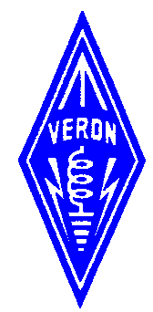

Via deze index is allerlei leuke en nuttige informatie over o.a. de  te vinden:
N3KL Solar Activity Monitor:
| Solar X-rays: Geomagnetic Field: |
|


Voor aanvullingen en opbouwende kritiek klik op het onderstaande plaatje of type pe1mul@amsat.org in je mail:

Rest mij nog je veel surf-plezier toe te wensen...
Laatste update van deze site: 05-09-2021
Deze site is bijgewerkt door mijn dochter Carola.